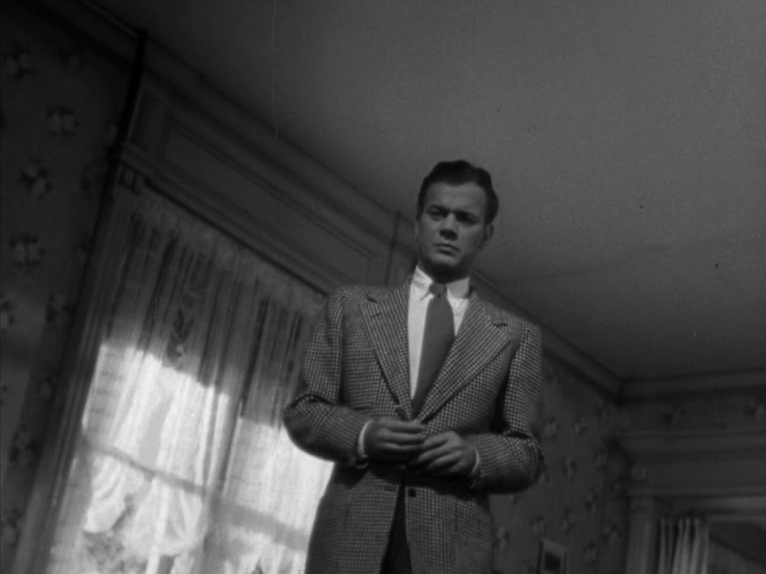
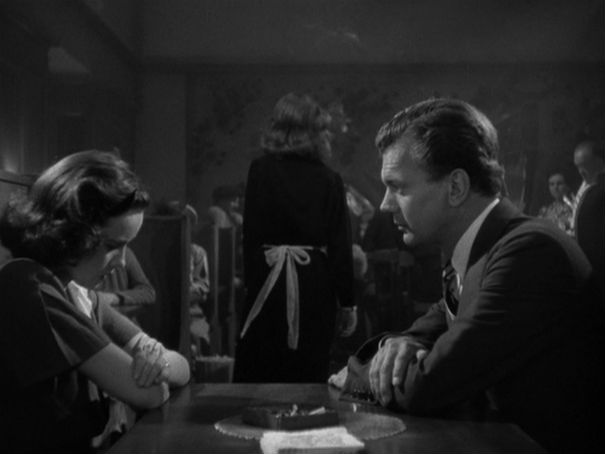

La Sombra De Una Duda


El tío Charlie visita a sus parientes en Santa Rosa.
Él es un hombre muy encantador, pero su sobrina lentamente descubre que es buscado por asesinato y pronto reconoce sus sospechas.